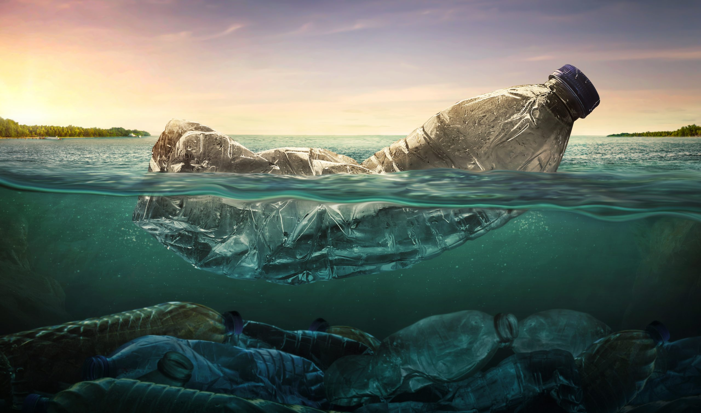
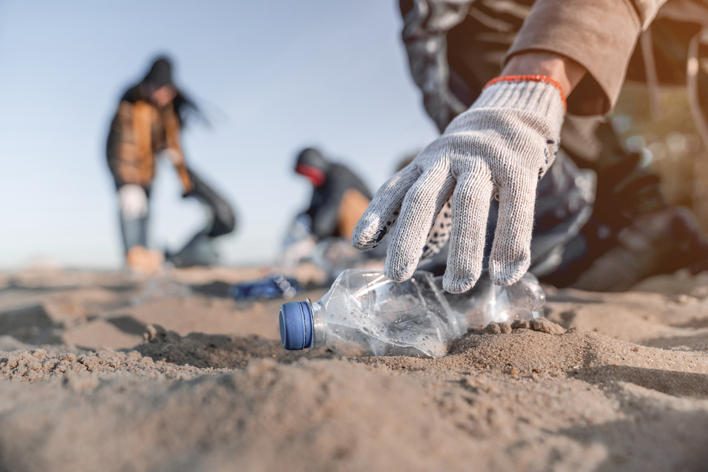
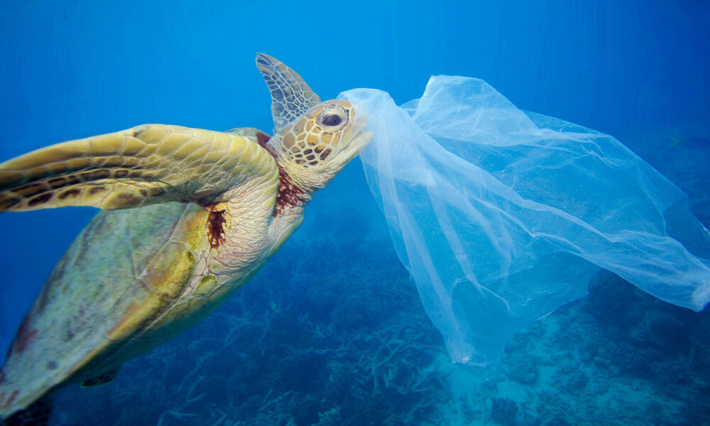

Marine Pollution
Marine pollution is a combination of chemicals and trash, most of
which comes from land sources and is washed or blown into the ocean. This pollution results in damage to the environment, to the
health of all organisms, and to economic structures worldwide
Marine litter All manufactured products – most of them plastic
– end up in the ocean. Common types of marine debris include cigarette butts, bottle caps, food wrappers and fishing gear, along
with a variety of plastic items such as shopping bags and drink bottles. Plastic waste is particularly problematic as a pollutant
because it lasts so long. Plastic items can take hundreds of years to decompose.
This garbage poses a danger to humans as well as animals. Fish get entangled in the debris and get injured, and some animals
mistake materials such as plastic bags for food. Small organisms feed on small pieces of broken plastic, called microplastics,
and absorb chemicals from the plastic into their tissues.
Microplastics are less than five millimeters (0.2 inches) in diameter
and have been detected in a range of marine species, including plankton and whales. When small organisms that consume
microplastics are eaten by larger animals, the toxic chemicals become part of their tissues. In this way, microplastic
pollution migrates up the food chain and eventually becomes part of the food people eat.
Go to top
Actions
Addressing marine pollution requires a comprehensive approach
with strategies focused on prevention, mitigation and cleanup. Enforcing strict regulations, promoting environmentally friendly
alternatives and improving waste management practices are essential steps to curb industrial and agricultural waste.
Furthermore, investing in advanced technology and infrastructure for wastewater treatment facilities can significantly reduce
the introduction of pollutants into marine ecosystems.
Education and awareness campaigns are key in changing societal
perspectives on marine pollution. By educating people about ecosystems and its impact on health, individuals are empowered to make
sustainable choices. Engaging communities, schools, businesses and governments in cleanup and recycling efforts fosters collective
responsibility for environmental stewardship and ocean protection.
International cooperation is crucial to control marine
pollution globally. Developing effective strategies, sharing resources and holding polluters accountable requires coordinated
efforts among nations.
This includes initiatives such as the UN's Sustainable Development Goals and partnerships between
governments, NGOs and the private sector to ensure the long-term health of our oceans.
Go to top
Impact
Marine pollution has severe impacts on biodiversity and ecosystem
health. Chemical wastes such as heavy metals and pesticides accumulate in marine life, causing bioaccumulation and biomagnification
, disrupting ecosystems and leading to the decline of marine species. Plastic pollution poses physical threats through entanglement
and ingestion, resulting in injury, suffocation and death to many marine animals.
Second, marine pollution has profound
socio-economic impacts, particularly on coastal communities that depend on marine resources for their livelihoods.
Pollution-related declines in fish populations directly affect the income and food security of fishing communities,
causing economic hardship and social unrest. Moreover,Marine pollution can degrade coastal habitats such as coral reefs and
mangrove forests, which provide critical ecosystem services such as coastal protection and nurseries for fish species.
This loss of habitat can have far-reaching consequences for coastal communities, including increased vulnerability to natural
disasters such as storms and tsunamis.
Marine pollution directly threatens human health through exposure to contaminated water,
leading to respiratory problems, skin infections and gastrointestinal diseases. Indirectly, consuming contaminated seafood can
cause foodborne illness and long-term health effects. Furthermore, pollution degrades entertainment venues and tourist
destinations, affecting the local economy. Urgent action is needed to reduce sources of pollution and protect marine ecosystems
and coastal communities.
Go to top
New Technologies
 Plastic pollution in our oceans is a critical environmental
concern that poses significant threats to marine ecosystems and human health. Innovative technologies are emerging globally to
solve this problem. One prominent solution is the deployment of autonomous underwater vehicles (AUVs) equipped with advanced
sensors and cameras.This AUV autonomously navigates the ocean floor to detect and collect plastic debris. Targeting areas with
high concentrations of plastic waste, these robots offer a more efficient and effective approach to cleaning the oceans than
traditional methods.
Plastic pollution in our oceans is a critical environmental
concern that poses significant threats to marine ecosystems and human health. Innovative technologies are emerging globally to
solve this problem. One prominent solution is the deployment of autonomous underwater vehicles (AUVs) equipped with advanced
sensors and cameras.This AUV autonomously navigates the ocean floor to detect and collect plastic debris. Targeting areas with
high concentrations of plastic waste, these robots offer a more efficient and effective approach to cleaning the oceans than
traditional methods.
Researchers are certainly making progress with biodegradable plastics designed to degrade rapidly in
marine settings. They are experimenting with different materials and formulas to maintain the strength and adaptability of
traditional plastics while being environmentally friendly. This innovation offers a way to reduce the flow of plastic into the
oceans, preventing its lasting damage to marine ecosystems.
In addition, advances in recycling technology offer fresh ways
to combat plastic pollution by converting waste plastics into valuable resources. Techniques such as chemical recycling and
pyrolysis break down used plastics into their basic components, ready for reuse in manufacturing.By completing the cycle of
plastic production and consumption, these methods not only prevent plastic waste from entering the ocean, but also foster a more
sustainable, circular economy. In essence, the proliferation of innovative technologies offers significant potential to address
the worldwide problem of ocean plastic pollution.
Go to top